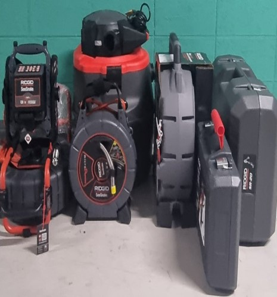
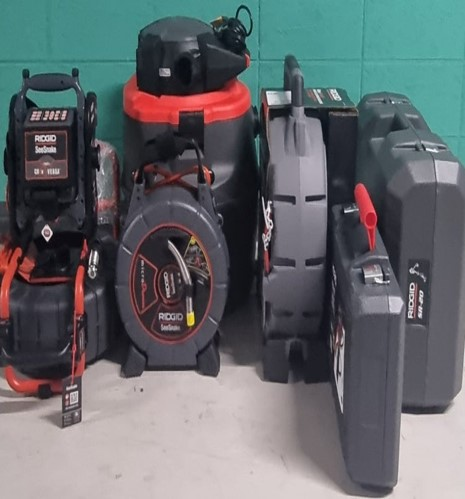

▶ 배관 내시경
배관 내시경은 관 내부를 직접 관찰할 수 있는 영상 진단 장비로, 주로 막힘 원인 파악, 배관 손상 확인, 정밀 진단 목적으로 사용됩니다.
각종 이물질과 노후화로 인하여 일반적으로 배관이 반복적으로 막히거나, 이물질이 원인인지 구조적인 문제인지 구분이 어려운 경우, 내시경을 통해 내부 상태를 직접 확인하게 됩니다.
▶ 배관 내시경 장점
- 비파괴 진단: 배관을 뜯지 않고 내부 상태를 확인할 수 있음
- 정확한 위치 파악: 막힘, 파손, 이물질의 위치를 영상으로 확인
- 불필요한 공사 예방: 시공 전 내시경으로 상태를 확인해 과잉 작업을 방지
▶ "이러한 분들께 추천해 드립니다!"
- 배관 구배를 예측할 수 있습니다.
- 빠른 주기로 막히고 또 뚫는 작업을 자주 반복 하는 곳!
- 관로탐지와 함께 새로운 배관공사를 계획중이신 분!
- 배관 수명을 더욱 오래 사용하고 싶으신 분!

 
